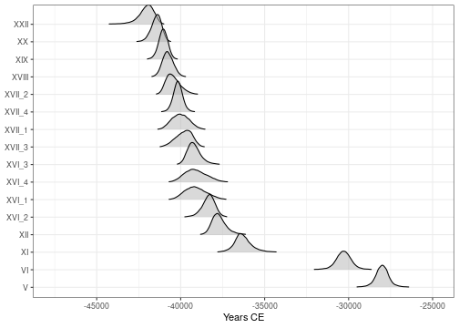
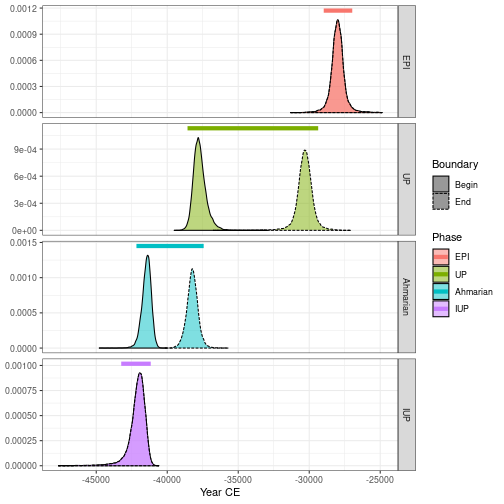
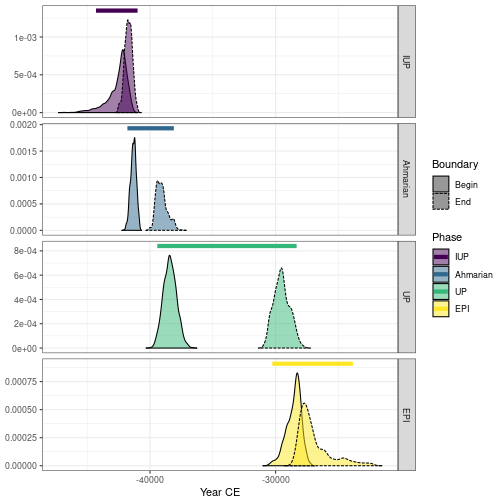
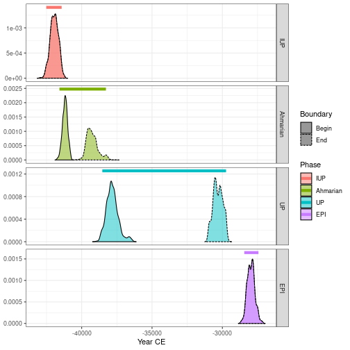
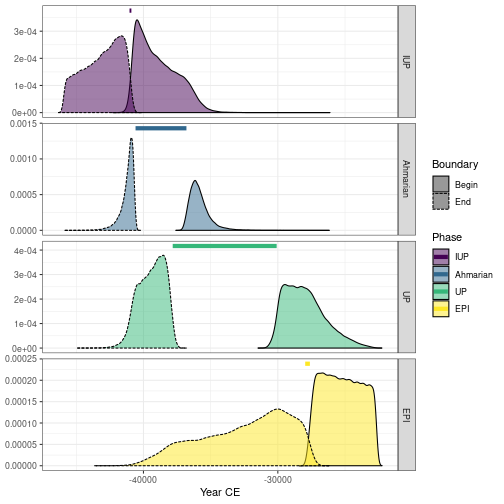
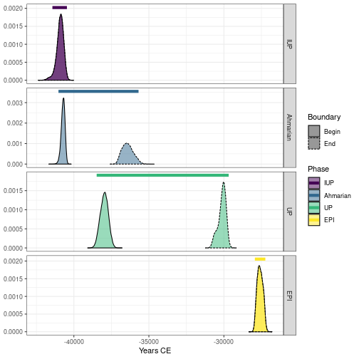

This vignette uses data available through the fasti package which is available in a separate repository. fasti provides MCMC outputs from ChronoModel, OxCal and BCal.
## Install the latest version
install.packages("fasti", repos = "https://tesselle.r-universe.dev")ChronoModel
Two different files are generated by ChronoModel: Chain_all_Events.csv that contains the MCMC samples of each event created in the modeling, and Chain_all_Phases.csv that contains all the MCMC samples of the minimum and the maximum of each group of dates if at least one group is created.
## Read events from ChronoModel
output_events <- system.file("chronomodel/ksarakil/Chain_all_Events.csv",
package = "fasti")
chrono_events <- read_chronomodel_events(output_events)
## Plot events
plot(chrono_events)
#> Picking joint bandwidth of 49.2
## Read phases from ChronoModel
output_phases <- system.file("chronomodel/ksarakil/Chain_all_Phases.csv",
package = "fasti")
chrono_phases <- read_chronomodel_phases(output_phases)
## Plot phases
plot(chrono_phases)
Oxcal
Oxcal generates a CSV file containing the MCMC samples of all parameters (dates, start and end of phases).
## Read OxCal MCMC samples
output_oxcal <- system.file("oxcal/ksarakil/MCMC_Sample.csv", package = "fasti")
oxcal_mcmc <- read_oxcal(output_oxcal)The phase boundaries cannot be extracted automatically from Oxcal output. Use as_phases() to get the phase boundaries:
## Get phases boundaries from OxCal
oxcal_phases <- as_phases(oxcal_mcmc,
start = c(2, 5, 19, 24),
stop = c(4, 18, 23, 26),
names = c("IUP", "Ahmarian", "UP", "EPI"))
## Plot phase boundaries
plot(oxcal_phases)
## Computes phases boundaries (min-max)
groups <- list(IUP = 3, Ahmarian = c(6:12, 14:17), UP = 20:22, EPI = 25)
oxcal_groups <- phase(oxcal_mcmc, groups = groups)
## Plot phases boundaries
plot(oxcal_groups)
BCal
BCal generates a CSV file containing the MCMC samples of all parameters (dates, start and end of groups).
## Read BCal MCMC samples
output_bcal <- system.file("bcal/output/rawmcmc.csv", package = "fasti")
bcal_mcmc <- read_bcal(output_bcal)The group boundaries cannot be extracted automatically from BCal output. Use as_phases() to get the group boundaries:
## Get groups boundaries from BCal
bcal_phases <- as_phases(bcal_mcmc,
start = c(1, 4, 9, 22),
stop = c(3, 8, 21, 24),
names = c("EPI", "UP", "Ahmarian", "IUP"))
## Plot group boundaries
plot(bcal_phases)
## Compute phase boundaries (min-max)
groups <- list(IUP = 23, Ahmarian = 10:20, UP = 5:7, EPI = 2)
bcal_groups <- phase(bcal_mcmc, groups = groups)
## Plot phase boundaries
plot(bcal_groups)